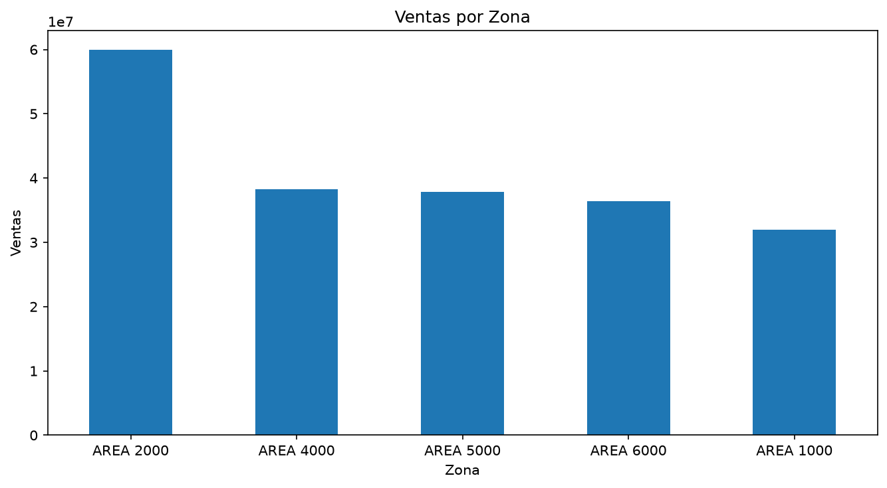
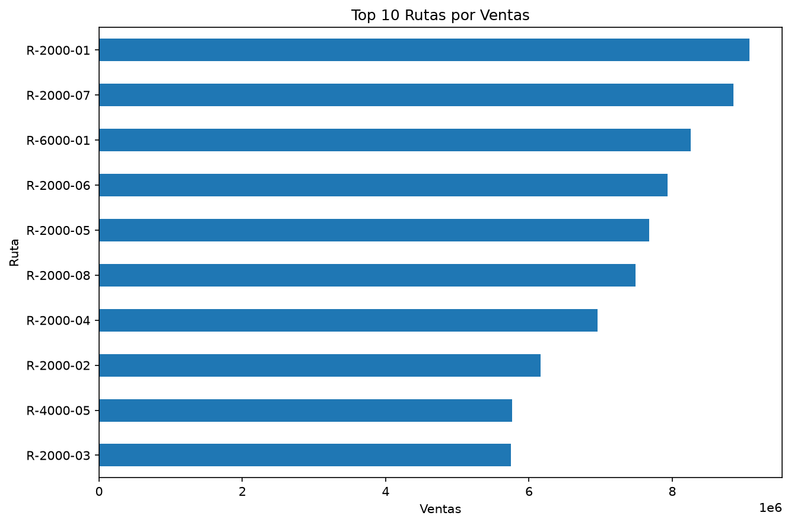
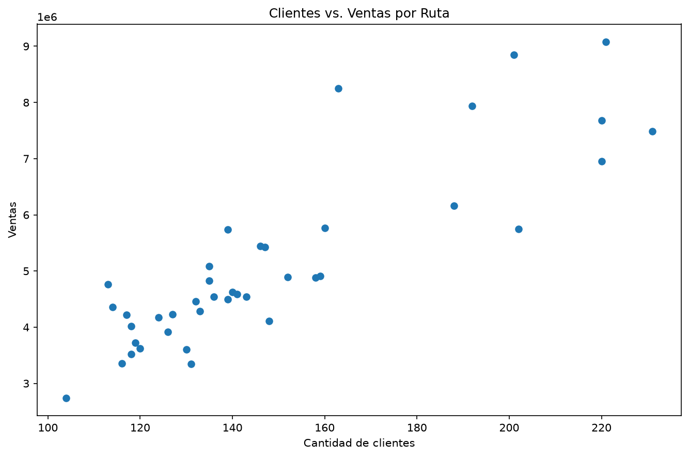
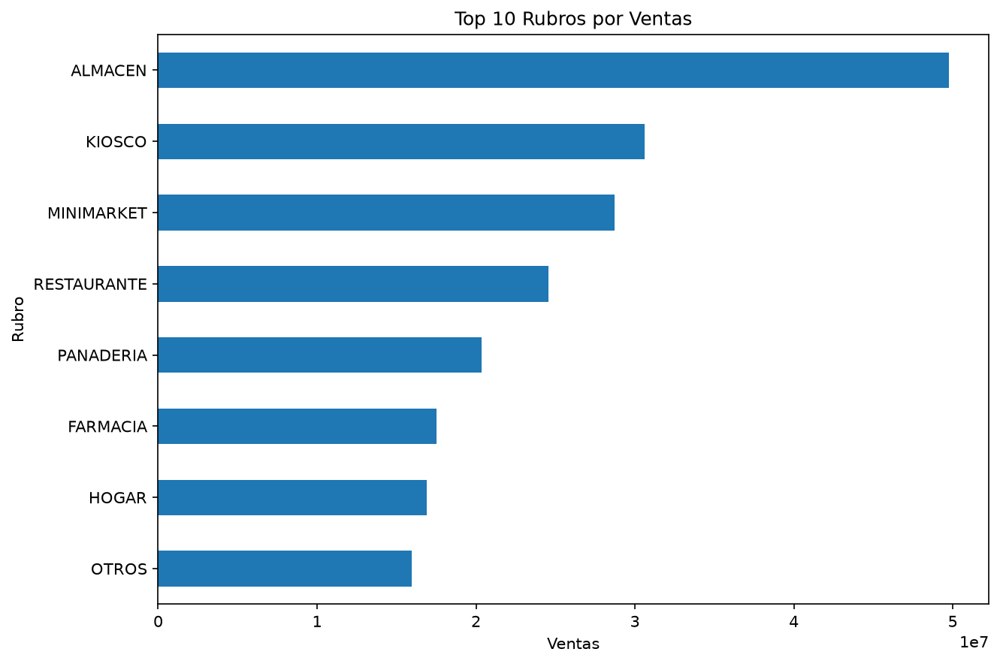
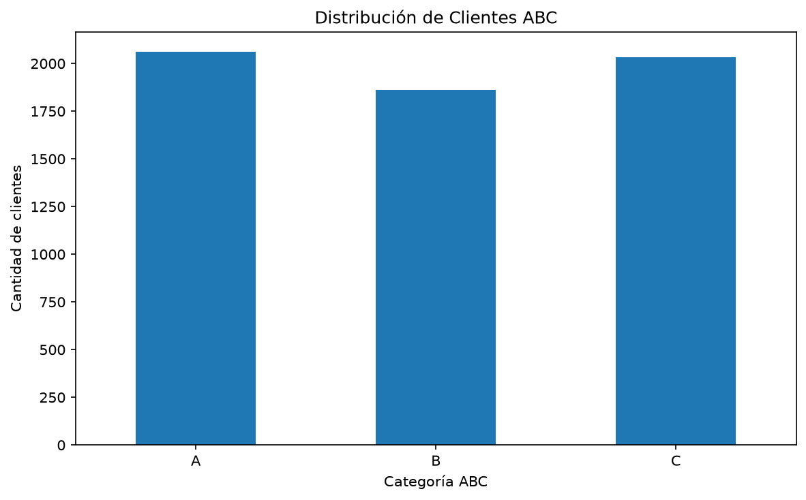
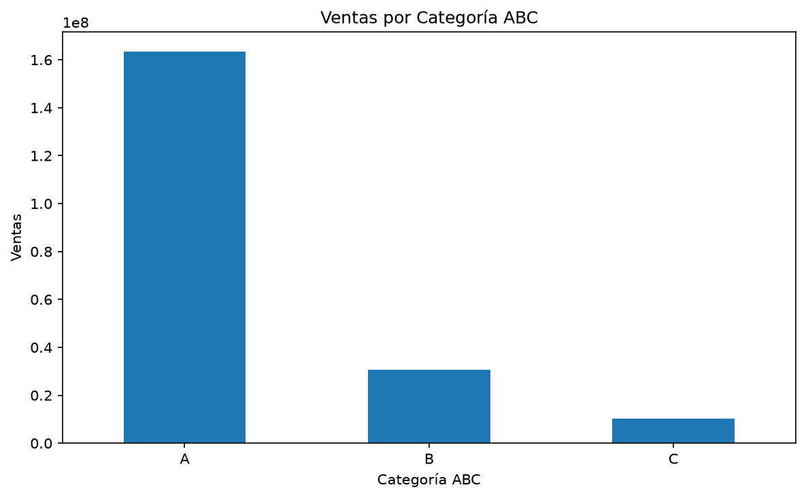

Análisis Comercial y Segmentación de Clientes
Proyecto de análisis exploratorio de datos comerciales orientado a identificar patrones de ventas, comportamiento de clientes y oportunidades de segmentación.
Objetivos
- Analizar la distribución de ventas por zona.
- Identificar las rutas con mayor volumen de ventas.
- Evaluar la relación entre clientes y ventas.
- Analizar los principales rubros comerciales.
- Segmentar clientes mediante metodología ABC/Pareto.
- Generar visualizaciones para apoyar la toma de decisiones.
Alcance del análisis
El análisis comercial se concentra en las áreas 1000, 2000, 4000, 5000 y 6000.
Los datos utilizados en esta versión pública del proyecto se han reemplazado por datos sintéticos para proteger la información comercial original.
Visualizaciones
1. Ventas por Zona

2. Top 10 Rutas por Ventas

3. Clientes vs. Ventas por Ruta

4. Top 10 Rubros por Ventas

5. Distribución de Clientes por Categoría ABC

6. Ventas por Categoría ABC

Metodología
El proyecto utiliza Python para la carga, transformación, agrupación y visualización de información comercial.
La segmentación ABC se construye a partir de la participación acumulada de las ventas, permitiendo identificar clientes de mayor importancia comercial.